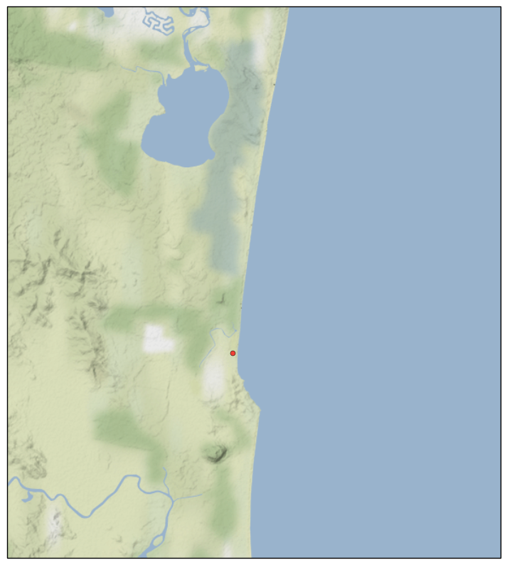

More Cartopy Tiles
More Cartopy Tiles Examples
Introduction
A previous post provided examples of Cartopy graphics, and its support for raster tiles. This post will continue the theme, and provide more examples.
Google Maps
A small example:
fig = plt.figure(figsize=(10,10))
tiler = GoogleTiles()
mercator = tiler.crs
ax = plt.axes(projection=mercator)
ax.set_extent(( 153, 153.2, -26.6, -26.4))
zoom = 12
ax.add_image(tiler, zoom )
# even 1:10m are too coarse for .2 degree square
#ax.coastlines('10m')
home_lat, home_lon = -26.5258277,153.0912987
# Add a marker for home
plt.plot(home_lon, home_lat, marker='o', color='red', markersize=5,
alpha=0.7, transform=ccrs.Geodetic())
plt.show()
After creating the matplotlib figure, we ask Cartopy to create a GoogleTiles object, We get the Coordinate Reference System (CRS) that the tiling service
uses, and create a Cartopy-aware Axes object using the CRS. We are pre-judging the system a little, in that the variable name mercator relies on us knowing
Google uses a Mercator projection (but Google could change tomorrow, and the code would work).
We then set the extent of our map to be my local stamping ground. Cartopy is smart enough to know that the extent (if specified without a CRS) is in lat/lon coordinates, even if the Axes object it is applied to is running a Mercator projection under the hood.
We the set a zoom level, and add the image that the tile server gives us to the Axes object. I have zoomed in quite a long way, so even the high quality coastlines don't match up to what Google gives us, so we skip drawing them. I don't know if Google or NaturalEarth are the more accurate. Then to demonstrate that this image can be used as an underlay for more graphics, I draw a red dot near where I live. Once again, I have to be careful to tell the Axes object that the coordinates I am feeding in are lat/lon coordinates.
The end result is below.

Stamen Terrain
For some visualizations, having the underlying terrain visible would be more important that the cultural data of the Google Map Tile. Cartopy supports an interface to Stamen Terrain tiles services. The example is very similar to the one above
fig = plt.figure(figsize=(10,10))
tiler = StamenTerrain()
mercator = tiler.crs
ax = plt.axes(projection=mercator)
ax.set_extent(( 153, 153.2, -26.6, -26.4))
zoom = 12
ax.add_image(tiler, zoom )
# even 1:10m are too coarse for .2 degree square
#ax.coastlines('10m')
home_lat, home_lon = -26.5258277,153.0912987
# Add a marker for home
plt.plot(home_lon, home_lat, marker='o', color='red', markersize=5,
alpha=0.7, transform=ccrs.Geodetic())
plt.show()
The end result is below.

To illustrate a zoomed-back-out use of this service, in the next example, we show the whole of Australia.
fig = plt.figure(figsize=(10,10))
tiler = StamenTerrain()
mercator = tiler.crs
ax = plt.axes(projection=mercator)
ax.set_extent((110, 155, -45, -5))
zoom = 6
ax.add_image(tiler, zoom )
ax.coastlines('10m')
plt.show()
Note the change in the zoom level. This gives us the graphic below (with no additions from me, this time).

Imports
Just for completeness, here are the imports from the Notebook that holds all the code above (and some code to come) (some are used only to support print-outs that define the environment for reproducibility purposes) :
# all imports should go here
import sys
import os
import subprocess
import datetime
import platform
import pandas as pd
import matplotlib.pyplot as plt
import cartopy.crs as ccrs
from cartopy.io.img_tiles import OSM
import cartopy.feature as cfeature
from cartopy.io import shapereader
from cartopy.io.img_tiles import StamenTerrain
from cartopy.io.img_tiles import GoogleTiles
from owslib.wmts import WebMapTileService
from matplotlib.path import Path
import matplotlib.patheffects as PathEffects
import matplotlib.patches as mpatches
import numpy as np
The notebook that has all the code is here